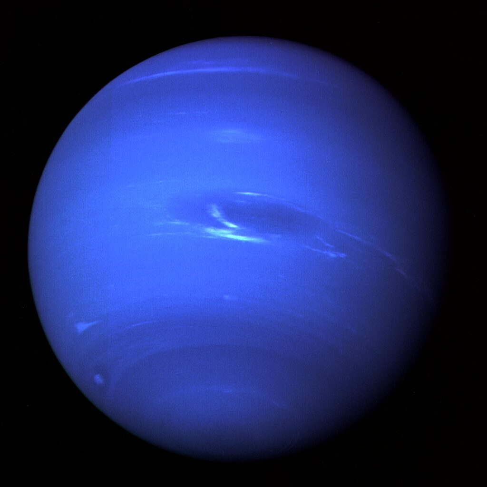
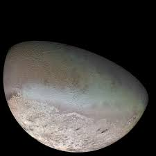

Description
Neptune est la huitième planète par ordre d'éloignement au Soleil et la plus éloignée connue du Système solaireN 2. Elle orbite autour du Soleil à une distance d'environ 30,1 au (4,5 milliards de kilomètres), avec une excentricité orbitale moitié moindre que celle de la Terre et une période de révolution de 164,79 ans. Il s'agit de la troisième planète la plus massive du Système solaire et de la quatrième plus grande par la taille — un peu plus massive mais un peu plus petite qu'Uranus. Par ailleurs, elle est la planète géante la plus dense. N'étant pas visible à l'œil nu, Neptune est le premier objet céleste et la seule des huit planètes du Système solaire à avoir été découverte par déduction plutôt que par observation empirique. En effet, l'astronome français Alexis Bouvard avait noté des perturbations gravitationnelles inexpliquées sur l'orbite d'Uranus et conjecturé au début du xixe siècle qu'une huitième planète, plus lointaine, pouvait en être la cause. Les astronomes britannique John Couch Adams en 1843 et français Urbain Le Verrier en 1846 calculèrent indépendamment la position prévue de cette hypothétique planète. Grâce aux calculs de ce dernier, elle fut finalement observée pour la première fois le 23 septembre 1846 par l'astronome prussien Johann Gottfried Galle, à un degré de la position prédite. Bien que Galle ait utilisé les calculs de Le Verrier pour découvrir la planète, la paternité de la découverte entre Adams et Le Verrier fut longtemps disputée. Sa plus grande lune, Triton, est découverte 17 jours plus tard par William Lassell. Depuis 2013, on connaît 14 satellites naturels de Neptune. La planète possède également un système d'anneaux faible et fragmenté et une magnétosphère. La distance de la planète à la Terre lui donnant une très faible taille apparente, son étude est difficile avec des télescopes situés sur la Terre. Neptune est visitée une seule fois lors de la mission Voyager 2, qui en réalise un survol le 25 août 1989. L'avènement du télescope spatial Hubble et des grands télescopes au sol à optique adaptative a ensuite permis des observations détaillées supplémentaires.
Atmosphére
L'atmosphère de Neptune, épaisse de plus de 8 000 km68, est composée en volume d'environ 80 % d'hydrogène et de 19 % d'hélium avec de l'ordre de 1,5 % de méthane CH4— le fait que la somme fasse plus de 100 % est dû aux incertitudes sur ces proportions1. Des traces d'ammoniac (NH3), d'éthane (C2H6) et d'acétylène (C2H2) ont également été détectées1. Son atmosphère forme environ 5 % à 10 % de sa masse et représente 10 % à 20 % de son rayon84. La couleur bleue de Neptune provient principalement du méthane qui absorbe la lumière dans les longueurs d'onde du rouge99. En effet, des bandes d'absorption importantes de méthane existent à des longueurs d'onde du spectre électromagnétique supérieures à 600 nm100. Cependant, la couleur azur de l'atmosphère de Neptune ne peut être expliquée par le seul méthane — qui donnerait une couleur plus proche de l'aigue-marine d'Uranus — et d'autres espèces chimiques, pour l'heure non identifiées, sont certainement à l'origine de cette teinte particulière101,102. En effet, la teneur en méthane atmosphérique de Neptune étant similaire à celle d'Uranus, elles auraient sinon la même couleur103. L'atmosphère de Neptune est divisée en deux régions principales : la basse troposphère, où la température diminue avec l'altitude, et la stratosphère, où la température augmente avec l'altitude94. La frontière entre les deux, la tropopause, se situe à une pression de 0,1 bar (10 kPa)84. La stratosphère cède ensuite la place à la thermosphère vers les pressions proches de 10-5 à 10−4 bar (1 à 10 Pa) puis passe progressivement à l'exosphère.
climat
Le climat sur Neptune est caractérisé par d'importants systèmes de tempêtes, avec des vents dépassant les 2 000 km/h (environ 550 m/s), soit presque un flux supersonique dans l'atmosphère de la planète — où la vitesse du son est deux fois plus grande que sur Terre111. Ces vents sont par ailleurs les plus rapides du Système solaire99. En suivant le mouvement des nuages persistants, il a été observé que la vitesse du vent varie de 20 m/s lorsqu'ils vont vers l'est à 325 m/s lorsqu'ils vont vers l'ouest112. Au sommet des nuages, les vents dominants varient en vitesse de 400 m/s le long de l'équateur jusqu'à 250 m/s aux pôles105. La plupart des vents sur Neptune se déplacent dans une direction opposée à la rotation de la planète113. Le schéma général des vents montre également une rotation prograde aux latitudes élevées par rapport à une rotation rétrograde aux latitudes faibles. Cette différence de direction d'écoulement serait une sorte d'effet de peau et non le résultat de processus atmosphériques plus profonds Neptune diffère grandement d'Uranus par son niveau typique d'activité météorologique. En effet, il n'a été observé aucun phénomène comparable sur Uranus d'après les observations de Voyager 2 en 1986115. L'abondance de méthane, d'éthane et d'acétylène à l'équateur de Neptune est 10 à 100 fois supérieure à celle des pôles. Ceci est interprété comme une preuve de phénomènes similaires à une remontée d'eau à l'équateur provoquée par les vents puis d'une plongée d'eau près des pôles. En effet, la photochimie ne peut sinon pas expliquer la distribution sans circulation méridienne94. En 2007, il est découvert que la troposphère supérieure au pôle sud de Neptune est environ 10 degrés plus chaude que le reste de son atmosphère, qui a pour température moyenne environ 73 K (−200,15 °C)89. Le différentiel de température est suffisant pour permettre au méthane, qui est figé ailleurs dans la troposphère, de s'échapper dans la stratosphère près du pôle116. Ce point chaud relatif est dû à l'inclinaison axiale de Neptune, celle-ci exposant le pôle sud au Soleil pendant le dernier quart de l'année de Neptune, soit environ 40 années terrestres. Au fur et à mesure que Neptune se déplace lentement vers le côté opposé du Soleil, le pôle sud devient assombri et le pôle nord illuminé, ce qui provoque le déplacement de ce point chaud vers le pôle nord117. En raison des changements saisonniers, la planète entrant dans son printemps dans son hémisphère sud, les bandes nuageuses de l'hémisphère sud de Neptune augmentent en taille et en albédo. Cette tendance est observée pour la première fois en 1980, et devrait durer jusque dans les années 2020, du fait des saisons qui durent quarante ans sur Neptune en raison de sa longue période de révolution
Triton
Triton est le plus gros des quatorze satellites naturels de Neptune et le septième par distance croissante à cette dernière. Il a été découvert le 10 octobre 1846 par l'astronome britannique William Lassell, dix-sept jours après la découverte de Neptune. Il a un diamètre d'un peu plus de 2 700 kilomètres, ce qui en fait le septième satellite naturel du Système solaire par taille décroissante — et un astre plus gros que les planètes naines dont Pluton et Éris. C'est le seul gros satellite connu du Système solaire orbitant dans le sens rétrograde, c'est-à-dire inverse au sens de rotation de sa planète ; tous les autres satellites dans ce cas sont de petits corps irréguliers de quelques centaines de kilomètres dans leur plus grande longueur. Cette caractéristique orbitale exclut que Triton ait pu se former initialement autour de Neptune et sa composition similaire à celle de Pluton suggère qu'il s'agit en réalité d'un objet issu de la ceinture de Kuiper capturé par Neptune3. Triton est, avec Phobos4, la seule lune connue du Système solaire à se rapprocher de la planète autour de laquelle elle orbite5 : la Lune, par exemple, s'éloigne de la Terre d'environ 3,8 centimètres par an5. Triton orbite autour de Neptune en 5 jours et 21 heures sur une trajectoire quasi circulaire ayant un demi-grand axe de 354 759 kilomètres6, une inclinaison de 156,865° (-23,135°) sur le plan de Laplace6 du système, et jusqu'à 129,6° (-50,4°) sur le plan orbital de sa planète7. Ceci lui confère des saisons très marquées tout au long de l'année neptunienne, longue de 164,79 années terrestres ; l'hémisphère sud a ainsi passé son solstice d'été en 20008 avec une inclinaison proche du maximum possible par rapport au Soleil, ce qui est à l'origine d'un réchauffement général de l'hémisphère sud depuis le passage de Voyager 2 le 25 août 1989.
| masse | graviter | duree rotation | satellites | revolution | Neptune | 1,024 × 10^26 kg | 11,15 m/s² | 16h 6m | 14 | 165 ans | Triton | 2,140 × 1022 kg | 0,78 m/s2 | verouillage gravitationnel | 0 | 5,877 |
|---|